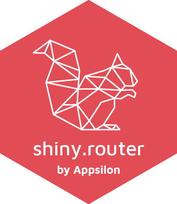

A minimalistic router for your Shiny apps.
Now it’s possible to recreate a state of your app, by providing a specific URL, like:
make_router( route("<your_app_url>/main", mainPageShinyUI), route("<your_app_url>/other", otherPageShinyUI) )
Basic tutorial article is available on Appsilon’s blog.
Live demo
Source code
This library source code can be found on Appsilon’s Github: https://github.com/Appsilon/shiny.router
How to install?
It’s possible to install this library through CRAN
install.packages("shiny.router")
The most recent version you can get from this repo using remotes.
remotes::install_github("Appsilon/shiny.router")
To install previous version you can run:
remotes::install_github("Appsilon/shiny.router", ref = "0.1.0")
Example
Visit examples directory for some complete samples. Here’s the basic usage:
library(shiny) library(shiny.router) root_page <- div(h2("Root page")) other_page <- div(h3("Other page")) router <- make_router( route("/", root_page), route("other", other_page) ) ui <- fluidPage( title = "Router demo", router$ui ) server <- function(input, output, session) { router$server(input, output, session) } shinyApp(ui, server)
How to contribute?
If you want to contribute to this project please submit a regular PR, once you’re done with new feature or bug fix.
Reporting a bug is also helpful - please use github issues and describe your problem as detailed as possible.
Changes in documentation
Documentation is rendered with pkgdown. Just run pkgdown::build_site() after editing documentation or README.md.
Troubleshooting
We used the latest versions of dependencies for this library, so please update your R environment before installation.
However, if you encounter any problems, try the following:
- Up-to-date R language environment
- Installing specific dependent libraries versions
magrittr
r install.packages("magrittr", version='1.5')shiny
r install.packages("shiny", version='0.14.2.9001')
- Missing
shiny.semanticdependency - one of our examples uses one of our others libraries, so please install it as well, when running that example. Repository: shiny.semantic.
Appsilon

Appsilon is the Full Service Certified RStudio Partner. Learn more at appsilon.com.
Get in touch dev@appsilon.com